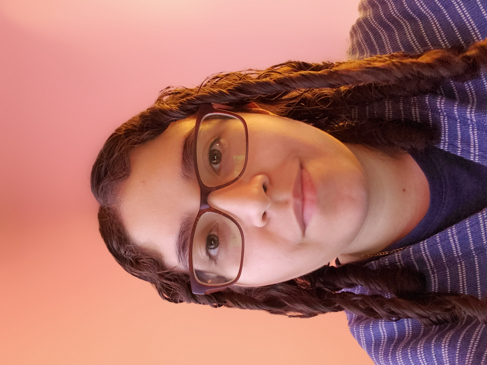

 My name is Stephannie Sipaque, I am from Plainfield, New Jersey. I am the oldest child out of three, I have two younger brothers. I am currently a student at The College of New Jersey where I am studying to become a web developer. I am a self-taught artist who does digital and traditional art. I have been drawing since I can remember, I have always loved art and cartoons. I draw with various mediums such as watercolor, pencil, markers, colored pencils, and oil pastels just to name a few. I especially enjoy drawing characters and am capable of drawing in different styles, but I prefer more stylized art as they tend to be more fun for me to make.